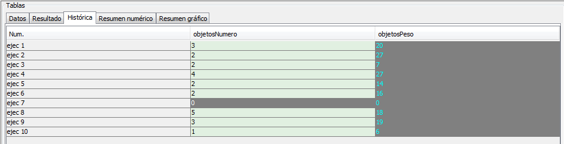

volver
Panel tablas
El aspecto del panel de tablas es el siguiente:
En la primera pestaña se muestra la tabla de datos: se representan los datos de entrada.
- Num.
Número identificador del dato.
- Tipo de dato de entrada
Dato para el tipo de dato de entrada correspondiente.
En la segunda pestaña se muestra la tabla de resultados: para los distintos métodos
con unos mismos datos de entrada, se presentan los valores de salida de la ejecución.
- Métodos:
Nombre de los métodos.
- Datos de entrada:
Los datos de entrada para esa ejecución.
- Salida:
Los datos de resultado de esa ejecución.
En la tercera pestaña se muestra la tabla histórica: resultados de cada ejecución
para cada conjunto de datos de entrada y cada método.

- Número de ejecución:
Número de ejecución.
- Resultado de cada método:
Resultados de cada método para cada número de ejecución.
En la cuarta pestaña se muestra la tabla resumida: el porcentaje de las soluciones
óptimas para cada uno de los métodos.
- Total de ejecuciones:
Número de ejecuciones realizadas.
- Porcentaje de resultados subóptimos de cada método:
Porcentaje de ejecuciones en las que cada método ha dado resultados subóptimos.
- Porcentaje de resultados óptimos de cada método:
Porcentaje de ejecuciones en las que cada método ha dado resultados óptimos.
- Porcentaje de resultados superóptimos de cada método:
Porcentaje de ejecuciones en las que cada método ha dado resultados superóptimos.
- Porcentaje de desviación media de cada método:
Porcentaje de desviación media de los resultados no óptimos de cada método.
- Porcentaje de desviación máxima superóptima de cada método:
Porcentaje de desviación máxima de los resultados superóptimos de cada método.
- Porcentaje de desviación máxima subóptima de cada método:
Porcentaje de desviación máxima de los resultados subóptimos de cada método.
En la última pestaña se muestra el resumen gráfico de los resultados de cada ejecución para cada método.
- % de resultados óptimos
- Desviaciones máximas
16 de Septiembre de 2016